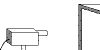
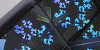

| The setup of simple videofeedback, videofeedback without mirrors. A videocamera, monitor, and cable are all you need. |  |
| Examples of dynamical patterns from simple videofeedback. Some behaviors are very simple, some are remarkably complicated. The zoom and angle of the camera determine the type of pattern. | |
| A summary of Crutchfield's analysis of dynamical videofeedback. | |
| The variant of Courtial, Leach, and Padgett for making stable fractal patterns by pixellated videofeedback. | |
| David Hagar's experiments producing stable fractal patterns from videofeedback with one mirror. | |
| Some examples of videofeedback with two mirrors. |  |
| Finally, a review of the IFS techniques we shall use to deconstruct viseofeedback with mirrors. |
Return to Video Feedback Lab.